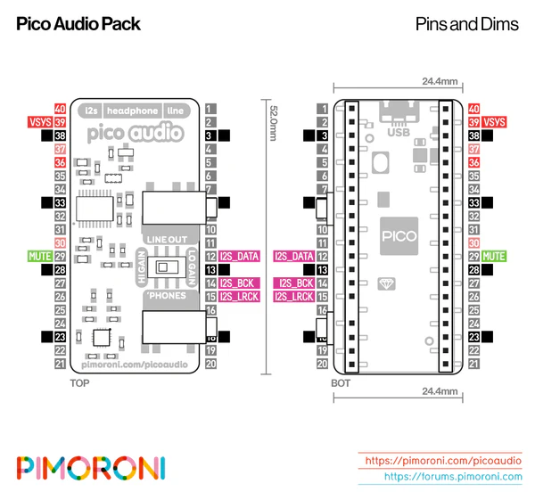

these are mostly notes for myself so far, not any sort of writeup that’s supposed to be legible. enjoy if you dare!
RasPi-based prototype
Hardware
- Raspberry Pi Compute Module 4, which has an Ethernet MAC that supports the necessary timestamping for IEEE 1588
- the 1GB RAM, 8GB eMMC, no wifi variant.
- Waveshare CM4-NANO-B carrier board, which has both an Ethernet port and an audio jack (just driven off of the Pi’s PWM, so surely shitty audio, but good enough for testing).
Software
Using Pipewire’s preliminary AES67 support.
Setting up the Pi
Use the Raspberry Pi OS Lite image; I used specifically the 32-bit July 4th 2024 build (should I have used a 64-bit build?). If the Pi eMMC is empty (as it is the first time you connect it), it will show up as a USB mass storage device immediately. However, once you flash something, you need to use the rpiboot utility from the raspi usbboot repo in order to get it to show up as a mass storage device, even once you switch the CM4-NANO-B into boot mode. Add an empty “ssh” file and a “userconf” file with contents user:$(echo pass | openssl passwd -6 -stdin) to the boot volume (if you do this before ever booting you won’t need to use the rpiboot utility). mDNS is enabled for hostname raspberrypi by default.
To enable the shitty PWM-based audio, adapting from the wiki page for the carrier board, add dtoverlay=audremap,pins_18_19 to the bottom of /boot/firmware/config.txt (ensure that dtparam=audio=on is already there; if not, add it). Reboot. Test it with aplay -L to confirm “bcm2835 headphones” is listed as a card, then plug in some headphones and play a wav with aplay foo.wav.
Setting up Pipewire
We need a fairly recent Pipewire (at least, say, 1.2), beyond that which is available in Bookworm, the version of Debian that the Raspberry Pi OS I’m using is based on. So we need to use the version from bookworm-backports, first adding the Debian signing key since it’s different from Raspbian’s:
wget https://ftp-master.debian.org/keys/archive-key-12.asc
sudo mv archive-key-12.asc /etc/apt/trusted.gpg.d/debian-bookworm-archive.asc
echo deb http://deb.debian.org/debian bookworm-backports main | sudo tee /etc/apt/sources.list.d/backports.list
sudo apt update
sudo apt install -t bookworm-backports pipewireWe need to set up ptp4l to do timesyncing. For now we don’t have any other possible grandmasters on the network, so we’ll keep the default config that allows the Pi to act as grandmaster.
sudo apt install linuxptp
echo 'KERNEL=="ptp[0-9]*", MODE="0644"' | sudo tee /etc/udev/rules.d/90-pipewire-aes67-ptp.rules
sudo systemctl enable --now ptp4l@eth0.serviceThen set up Pipewire’s actual AES67 support, by putting this configuration in ~/.config/pipewire/pipewire.conf.d/10-aes67.conf
mkdir -p ~/.config/pipewire/pipewire.conf.d
cd ~/.config/pipewire/pipewire.conf.d
curl https://gist.githubusercontent.com/jmgrosen/fb214bb9fe36b27a8847b99c6590eb49/raw/7774310bcb8c698beda33b644f22d4e348f34446/10-aes67.confAdd threadirqs to kernel command line /boot/firmware/cmdline.txt.
Unfortunately the builtin PWM-based audio driver for the Pi requires very large period sizes (1024), so the lowest latency we seem to be able to get is about 46ms (). We will in fact need a different DAC to get decent latency.
Host Audio Drivers
Linux
The Pipewire AES67 support seems to work pretty well. There’s also an ALSA driver that I haven’t tried.
macOS
The Merging RAVENNA/AES67 Virtual Audio Device seems to be the main driver. It used to be available for free, but now it’s $50. An even bigger issue is that it causes my laptop to kernel panic frequently, making it really a nonstarter for actual use. Might be good enough for testing, though. Follow this guide to configure SAP announcements (in addition to the built-in RAVENNA (mDNS) announcements) that Pipewire can look for.
so i’m working on my own
2024-10-12
working on the ptp implementation around statime. macos doesn’t seem to have a way to actually use any available hardware timestamping of ethernet interfaces? at least from userspace. it has the normal SO_TIMESTAMP (and mach_absolute_time-based SO_TIMESTAMP_MONOTONIC) for doing software timestamping on receives though. for now for TX timestamps i’ll just timestamp when a packet goes out from my code and eventually change to using the ptpd approach of using the multicast loopback receive to get the TX timestamp a bit closer to the metal.
do i have to make a shared-reference version of OverlayClock? probably
got frustrated.
Links
to set dscp value correctly in the packets from the driver: https://gitlab.freedesktop.org/pipewire/pipewire/-/blob/master/src/modules/module-rtp-sink.c
STM32-based prototype
got a Nucleo-F767ZI. got an STM32F7-based board because that’s what the statime-stm32 example uses.
also got a pimoroni pico audio kit because that seemed like the simplest/cheapest i2s dac board that microcenter had with a jack rather than speaker amplifier.
2024-10-12
hooked together the Nucleo and pimoroni kit: 
- VSYS ←> 5V
- GND ←> GND
- MUTE ←> CN8_16/D50/PG3
- I2S_DATA ←> CN7_3/D17/I2S_A_SD/PB15
- I2S_BCK ←> CN10_?/D?/?/PB10 (originally CN7_5/D18/I2S_A_CK/PB13 but that conflicts with ethernet pins)
- I2S_LRCK ←> CN7_7/D19/I2S_A_WS/PB12
2024-10-13
trying to figure out how to do I2S on the STM32F7 from Rust. it seems like it’s not supported in stm32f7xx-hal, but the I2S peripheral on the stm32f7 is almost identical to that on the stm32f4, so hopefully we can steal some of the code from stm32f4xx-hal.
i realized the microusb cable i took home from resistor is power-only. rip.
2024-10-14
at resistor, equipped with a proper microusb cable, i was able to program the board with statime-stm32 and receive ptp packets! however, i couldn’t get lawo vsc to synchronize with it… i’m not sure whether this is due to some big problem or the ptp profile probably not being set correctly in statime-stm32. the logs for lawo vsc say “cannot use PTP ⇒ T1 value differs too much”.
i don’t think it’s just the port config. i changed the values to match those from the aes67 spec with no difference observed. i don’t see any ptp packets coming from my laptop, though, which seems very odd? it’s not, like, sending them at a level too low for wireshark to see, is it?
i guess i’ll switch to getting i2s to work.
oh, it does sync with ptpd on my laptop, though! encouraging!
2024-10-19
making progress on setting up the i2s in stm32f7xx-hal…
i was worried that i might not be able to get intra-sample phase sync (though it’s unclear how important that really is anyway…) due to not being able to “nudge” the i2s pll or in general control its phase, but then i realized that we’ll typically run the actual pll a lot faster than the i2s bit clock and so we can set the phase by controlling when exactly we enable the bit clock. that means we should have like 10-100ns accuracy (at the example i2s clk frequency of ~61MHz) assuming we can work out the interrupts nicely.
… but of course we can’t control the precise frequency of the i2s plls across devices so what good is that. it doesn’t look like there’s an easy way to nudge the pll…
2024-10-25
perhaps the stm32h7 has more appropriate PLLs? https://community.st.com/t5/stm32-mcus-embedded-software/pll-anybody-using-the-internal-plls-as-vco-for-audio/td-p/145437
or could just use an external vcxo, but that’s another part (but not that expensive of a part—looks like an appropriate one on digikey for $1.67@qty100)
2024-10-26
got i2s working, finally! really hacky driver wrapper at the moment, but it does the job
2024-10-27
gonna get dma working for the i2s then introduce rtic
godddd stm32f7xx-hal sucks… i don’t think rust is really a great idea on stm32s…